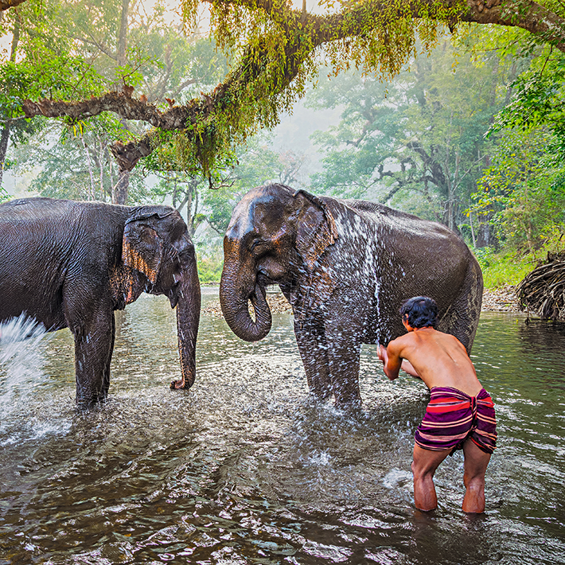

泰國：不容錯過的景點
 拷索國家公園位於泰國南部，保有未受破壞的原生動植物，素有泰國「侏羅紀公園」的美譽。園內可見大片原始雨林，石灰岩地質的山脈已有一億六千萬年的歷史；除了有大象與花豹棲息，更有數不盡的喧囂鳥類與猴子，啼叫聲不絕於耳。可以徒步、划獨木舟，或搭乘卡車前往公園中心地帶，探索風光旖旎的秀蘭湖；湖畔的漂流船屋與豪華帳棚都是住宿的好選擇。
玉佛寺坐落曼谷市中心，屬大皇宮建築羣之一，寺內的金色舍利佛塔據聞珍藏着釋迦牟尼佛的舍利。佛塔外部從上到下都是亮晃晃的金色，令人目不暇給。建議清晨前來參觀，才不會太熱。
北碧府泰國西部以天然美景著稱的景點，但最富盛名的莫過於成為電影《桂河大橋》主題的泰緬鐵路。二戰期間，日軍占領泰國和緬甸，強拉數十萬亞洲平民與西方戰俘興建泰緬鐵路，過程中導致近十萬人喪生，因而有死亡鐵路之稱。當地建有紀念碑與兩座博物館；市鎮之外的國家公園則有瀑布與洞穴值得一覽。
大城（阿瑜陀耶）坐擁三座鍍金皇宮及400座滿藏寶物的佛寺，一度是世界最大的城市之一。過去是阿瑜陀耶王朝的首都，古城遺址現已規畫為大城歷史公園，並被列為世界文化遺產。這裏位於曼谷北方，距曼谷僅65公里之遙，為三條河流所環繞，往南通向泰國灣。